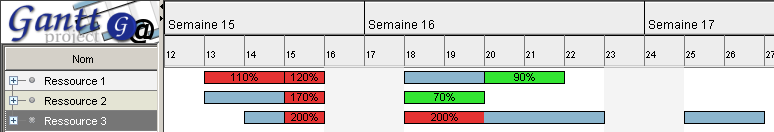
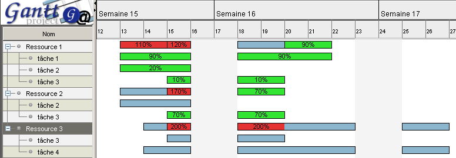

Graphique des ressources
Un graphique sp�cifique est disponible pour toutes les ressources utilis�es.
Il affiche le temps d'utilisation des ressources :

- les rectangles verts (par d�faut) indiquent des sous-charges (pourcentage d'activit�
de la ressource inf�rieur � 100 % ;
- les rectangles bleus (par d�faut) indiquent une
charge normale (pourcentage d'activit� de la ressource �gal � 100 % ;
- les rectangles rouges (par d�faut) indiquent des surcharges (pourcentage d'activit�
de la ressource sup�rieur � 100 %.
Dans le cas des sous-charges et des surcharges, il est indiqu� le pourcentage d'activit� de la ressource dans
le rectangle. Si le rectangle est trop petit pour affich� correctement ce pourcentage, ce dernier ne sera
pas affich�.
 Vous pouvez modifier les couleurs des rectangles de charges :
Vous pouvez modifier les couleurs des rectangles de charges :
- menu Edition, Pr�f�rences ;
- option G�n�ral, Couleurs ;
- cliquez sur le bouton Couleur en face de Ressources, Ressources (surcharg�es) ou
Ressources (sous-charg�es) ;
- choisissez la couleur par d�faut d�sir�e.
D�tail des affectations
Il est possible de voir le d�tail des affectations et ainsi la charge de travail par ressource et par t�che.
